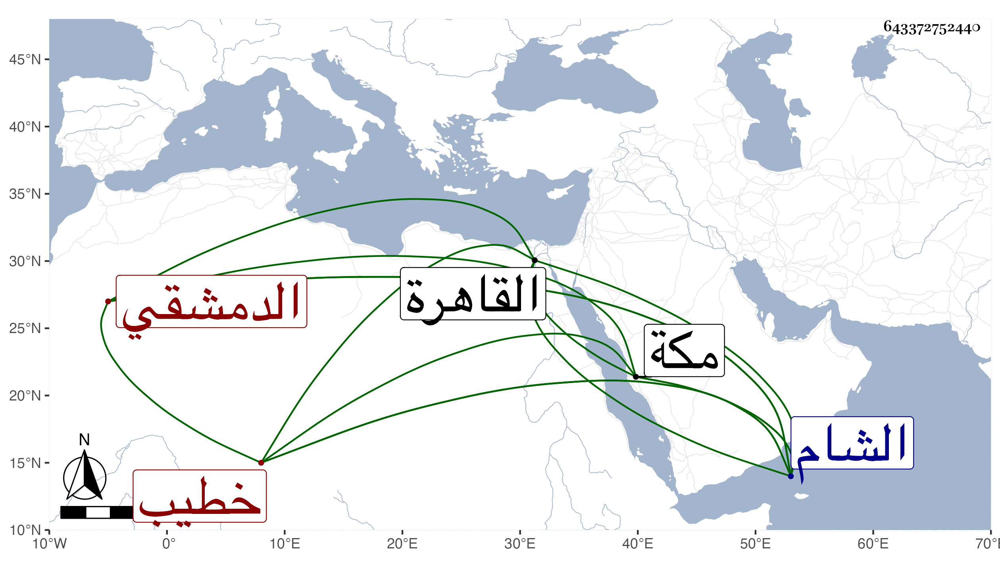

0902Sakhawi.DawLamic.ITO20230111-ara1.EIS1600.643372752440
Biography ID: 643372752440
596
محمد بن محمد بن محمد بن علي بن أبي بكر بن يوسف بن علي البدر ويلقب في الشام بالشمس بن الشمس الدمشقي خطيب السابتية منها وابن خطيبها والماضي أبوه . ولد في أوائل ربيع الأول سنة ثمان وثلاثين وثمانمائة وقدم مع أبيه القاهرة فسمع على شيخنا وكان يساعد والده في كتابة البخاري وغيره مع كونه مراهقا ثم لقيني بالشام في سنة تسع وخمسين فسمع معي على الشهاب بن زيد وغيره وكذا سمع على الشمس أبي عبد الله محمد بن حامد الصفدي وتكسب بالشهادة وخطب بالنابتية كأبيه فيها ثم لقيني بمكة في سنة أربع وتسعين فاستجازني وأظنه جاور التي تليها وكتب لي شيئا من نظمه فمنه مما قاله على طريق القوم متغزلا من قصيدة :
| لولا عيونك لم تهج أشواقي | في رامة بنواظر الغزلان |
| كلا ولولا قدك المياس لم | يصب الفؤاد إلى غصون البان |
| يا من أثار بكل قلب حبه | سبب الهيام وباعث الخفقان |
| حركت سر الوجد في قلب غدا | لك مسكنا والسر في السكان |
وقوله مادحا الرسول عليه أفضل الصلاة والسلام :
| كل قلب بك يا نشر الصبا | عاش بعد الموت فيهم وصبا |
| ونسيم القرب نادى منشدا | إن تكن من حيهم يا مرحبا |
| عرب لي أرب في حبهم | أنني أقضي وأقضي الأربا |
| إن أمت في حبهم وجدا بهم | يرقص الكون لموتي طربا |
| سادة سيدهم لا غرو إن | جمع السودد فهو المجتبى |
| أشرف الخلق إلى الله به | وصل القوم وكان السببا |
| يا رسول الله يا من مدحه | أعجز العجم وأعيا العربا |
| غث خطيبا لك في حان الوفا | بشراب الإنس ينشي الخطبا |
ورأيت البدري قال في مجموعه أنشدني صاحبنا وبلدينا الشيخ شمس الدين محمد خطيب الثابتبة قوله :
| قلت له مذ مد سا | قيه وأسبى الأفئده |
| نار الحشا موصدة | في عمد ممدده |
وقوله :
| قال صف ريقي وخدي | لي تر مني من |
| قال صف ريقي وخدي | لي تر مني من |
| فوقي عند مقالي | صبغة الله ومن |
وأثنى على أدبه وخطابته وأنه يتكسب كأبيه بالشهادة .
